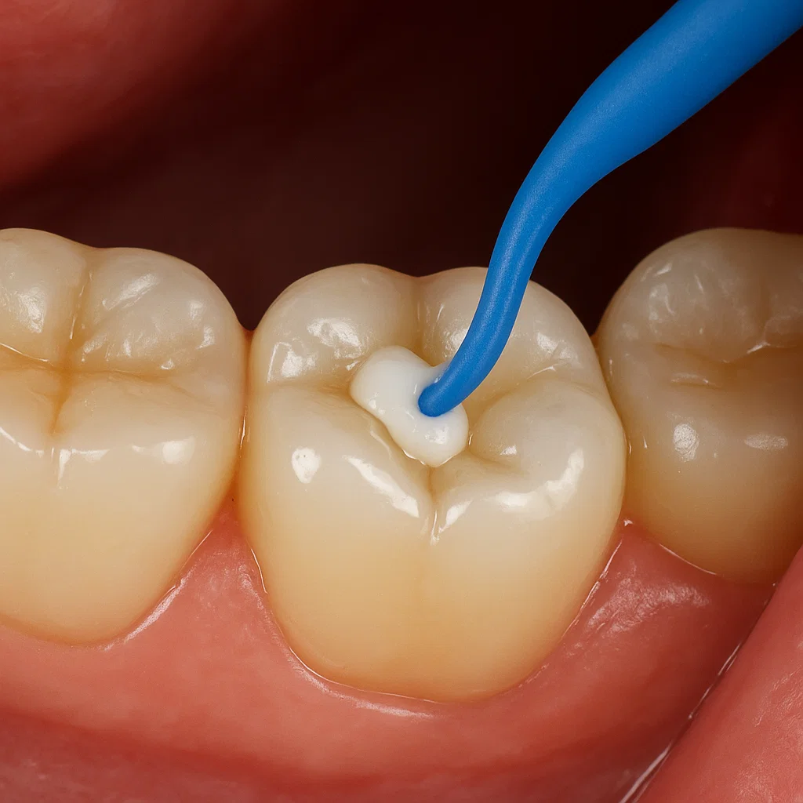

Консервативно зъболечение
Какво представлява консервативното лечение
Консервативното зъболечение е насочено към запазване на естествените зъби чрез лечение на кариеси и малки дефекти без хирургична намеса. При наличие на кариес зъболекарят премахва увредената тъкан и след това запълва кухината с пломба, която възстановява формата и функцията на зъба. Използват се съвременни обтурационни материали – най-често фотополимерни (композитни) пломби – които са силно естетични и прилягат добре към естествения цвят и релеф на зъба. Така запазваме зъба жив и функционален, без да го изваждаме. Понякога може да се наложи лечение на по-дълбок кариес чрез щифтово изграждане, но целта винаги е да се поддържа колкото е възможно повече от собствената зъбна тъкан.
Как протича лечението на кариес
Процедурата обикновено започва с локална упойка, за да се избегне болката. След упойката зъболекарят почиства кариозните тъкани с малък бормашин или лазер, като внимателно отстранява всички инфектирани участъци. След това кухината се промива и дезинфекцира. На следващия етап се поставя пломбата – материалът (композитна смес или друг обтурационен материал) се вкарва на няколко слоя и всяко нанасяне се втвърдява със светлина, за да стане здраво и плътно. Накрая зъбът се полира, за да бъде гладък и удобен при дъвчене. Цялата процедура обикновено отнема между 20 и 40 минути, в зависимост от размера и дълбочината на кариеса. В повечето случаи пациентът усеща облекчение от болката веднага след лечението и може бързо да се върне към нормалните си дейности.
Ползи от консервативното зъболечение
Ползите от консервативното лечение са, че се запазва естествената структура на зъба и нормалната функция на дъвчене. Ако кариесът не се лекува навреме, той може да доведе до сериозни усложнения като възпаление на нерва (пулпит) и необходимост от кореново лечение или вадене на зъба. Чрез своевременно премахване на кариеса и поставяне на пломба тези проблеми се предотвратяват. Освен това съвременните композитни пломби възстановяват естетиката на усмивката – те са неразличими от естествените зъби по цвят и форма. Лечението е бързо и безболезнено (благодарение на упойката) и често е по-щадящо за пациента и бюджета му в сравнение с по-сложно лечение или имплантиране. Пациентите често се радват на мигновено облекчение от зъбобола и избягват ненужни спешни интервенции.